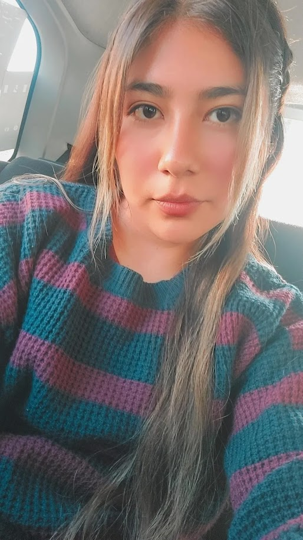

González Carbente Wendy Fernanda
Wendy es una ilustradora de 21 años que desde muy pequeña le ha gustado dibujar. A los 15 años al entrar a un taller de pintura al óleo se dio cuenta de su amor por la pintura y es aquí donde comenzó su interés en esta área. Le interesa cómo cada autor puede llegar a tener su propio estilo a pesar de dibujar diferentes objetos o utilizando diversas técnicas. Actualmente ilustra gracias a la escuela, pero en sus tiempos libres practica y experimenta con diferentes técnicas, en especial la acuarela. Uno de sus más grandes referentes en la ilustración es Shigeo Fukuda ya que puede expresar sus ilustraciones con un nivel de iconicidad muy bajo y abstracto, su color favorito es el azul ya que le encanta dibujar océanos. Wendy es una persona bastante dedicada y perfeccionista en todo lo que hace y tiene como meta encontrar su propio estilo.
Tengo 22 año, actualmente me encuentro estudiando la carrera de Diseño gráfico en la Benemérita Universidad Autónoma de Puebla